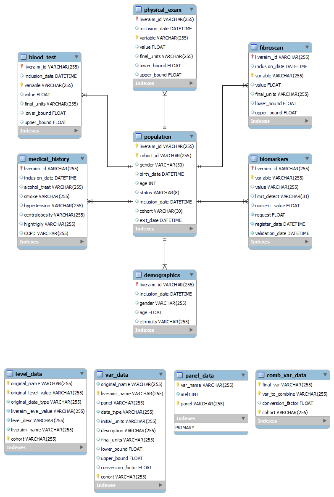

Overview
This section describes the structure, tables, and relationships within the data warehouse.
The data warehouse is composed of several tables that can be divided into two groups: the database itself, which we will simply call database, and the configuration data tables, where information about the variables, the structure of the database, mapping dictionaries, etc., is stored. The database, in its first version (prior to receiving biomarker data), consists of the following tables:
population: Contains basic information about each patient, such as gender, status, cohort membership, etc.blood_test: Contains variables extracted from the blood test (atdate_0), both categorical and numerical.demographics: Contains demographic information about the patient, such as gender, ethnicity, etc.fibroscan: Contains information related to the fibroscan test results for each patient.physical_exam: Contains information obtained from the physical examination, including variables such as weight, height, etc.medical_history: Contains information about each patient's medical history, including relevant comorbidities, etc.biomarkers: Contains data from biomarker measurements provided by CDB, Nordic, and Roche, as well as data from the computed biomarkers.
We will refer to these tables as panels or tables interchangeably. The population panel acts as the core of the database: the other panels are linked to this primary one (see General Relationships in the Schema).
The following image schematically depicts the structure and relationships of the data warehouse:

The data warehouse contains two types of tables in terms of format: long format tables and wide format tables:
-
Wide: These are the "usual" tables. Each variable is stored as a separate column in the table. Each row corresponds to the information of a single patient. In these tables, there cannot be duplicates in the identifier columns: all information for a patient is stored in a single row.
-
Long: These tables contain at least one patient identifier column (in this case,
liveraim_idandcohort_id) along with thevariableandvaluecolumns. Thevariablecolumn contains the names of the variables, while thevaluecolumn contains the value of the variable specified in thevariablecolumn. Tables in long format will have repeated entries in the patient identifier columns. In addition to the columns mentioned, these tables may include other columns that provide additional context for each entry: annotations for variable values (lower_bound,upper_bound), the date of each observation (date_0), and the units of the variable (final_units). Transforming a wide table into a long table is a straightforward process (if the necessary data is available) and is referred to in this documentation asmelting. Similarly, it is possible to transform a long format table into a wide format table with the same ease. An example of this format is shown below:date_0 liveraim_id cohort_id variable value final_units lower_bound upper_bound 2023-01-19 00:00:00 LA--- ----- alb 43 g/L 10 55 2023-01-19 00:00:00 LA--- ----- alk 41 U/L 20 150 2023-01-19 00:00:00 LA--- ----- alt 21 UI/L 5 0 500 2023-01-19 00:00:00 LA--- ----- ast 20 U/L 5.0 1000.0 2023-01-19 00:00:00 LA--- ----- bili 0.6 mg/dL 0.2 9.99 2023-01-19 00:00:00 LA--- ----- cb 8.7 mg/dL 0.2 9.99 2023-01-19 00:00:00 LA--- ----- chol 236 mg/dL 100 700 2023-01-19 00:00:00 LA--- ----- crea 1.1 mg/dL 0.3 9.99 2023-01-19 00:00:00 LA--- ----- crp NaN mg/dL 0.0 9.99 2023-01-19 00:00:00 LA--- ----- ferritin 146 ng/mL 10 999 ...
For long tables, since there can (and should) be repetitions in the ID columns (one repetition for each variable in long format at least), composite primary keys are used. In general, this database uses the columns liveraim_id, cohort_id, and variable as composite primary keys: the database does not allow any repetitions of the combination of these three variables.
Note: Using both
liveraim_idandcohort_idwithin the composite keys is redundant, as there is a bijective correspondence between these two identifiers. However, it has been configured this way to maintain identifier consistency.
It is important to clarify the difference between cohort_id and liveraim_id. cohort_id is the patient-specific identifier within each cohort. The encoding of these identifiers is heterogeneous, varies between cohorts, and originates from the original data. liveraim_id is a new variable generated during the execution of main.py, which assigns a unique identifier to each patient across all cohorts at the data warehouse level, following a common format. There is a bijective correspondence between these two variables.
Note: The variables in the
variablecolumn (the "melted" variables) of eachlongtable must be of the same data type. This is because SQL does not allow values with different data types in the same column. This adds robustness to the database at the cost of having to create additional tables. For example, in the case of blood test data, categorical variables have been transformed to numeric (as they are encoded with integers).
Initial data and configuration data
This section describes the initial data recieved from the partners and teh configuration files that the program needs to build the database. For each cohort, there are four types of files, which are described below:
database: contains the raw data of the cohortvar_data: contains configuration data about the core variables needed to create the data warehouselevel_data: contains configuration data about the levels of categorical core variables needed to create the data warehousecomb_var_data: For the variables that need to be combined, it contains the necessary data to perform this process.
Finally, an other file, panel_data is needed for the proper creation of the data warehouse. In this file the structure of the final panels is described.
Database files
The files we refer to as database files contain the raw database of the cohort. These are the files that the partners responsible for each cohort have sent us with the patient data.
The content of these files is never modified, neither manually nor through the code: all data processing is done after reading these files, which remain intact after each execution. The only modification they receive is a renaming necessary for their correct reading. For more details, see the section Structure of data/cohort_name/databases/ directory.
The format of these files varies depending on the cohort. For more information on reading the data, see the section File reading utils. When this files are read, they are loaded into the code as pandas.DataFrame objects.
Note: For obvious data privacy reasons, these files are not uploaded to GitHub.
var_data files
This file, along with level_data, is essential for the creation of the data warehouse. It is an Excel file (.xlsx) where each row corresponds to one of the selected/core variables. It contains the following columns:
original_name (str): Name of the core variable in the original database. It varies between cohorts.liveraim_name (str): Name of the core variable in the common format, i.e., in the liveraim format.panel (str): Panel where the variable will be stored.data_type (str): Final datatype of the variable.initial_units (str): Units of the variable in the original cohort.description (str): Short text describing the variable.final_units (str): Final units of the variable, i.e., units in the liveraim data warehouse.lower_bound (float): Lower bound of the variable. For checking purposes.upper_bound (float): Upper bound of the variable. For checking purposes.conversion_factor (float): Conversion factor from initial_units to final_units. Set to 1 if not needed.
Before running the code, you must verify that these files are in the correct directories, can be read correctly, have the structure defined above, and that the information they contain is correct. Any variation in structure/content may result in an error in execution or the creation of an erroneous data warehouse. The correct functioning of the program is highly dependent on these files.
These files are tracked in GitHub like the rest of the scripts, so there is no need to create them from scratch, and they should work fine if the repository is cloned.
When this file is read, it is loaded into the code as a pandas.DataFrame object. Throughout all the documentation, we will refer to this DataFrame also as var_data.
Note: If needed, addition of other columns is possible and should not create incompatibilities (but the management of those new columns should be implemented).
level_data files
This file, along with var_data, is essential for the creation of the data warehouse. These files describe the different levels of the categorical core variables. In this case, each row does not correspond to a variable, but to a level of the original variable. The file contains the following columns:
original_name (str): Name of the core variable in the original database. It varies between cohorts.original_level_value (Variable): Original value of the level in the cohort.original_data_type (str): Original datatype of the variable.liveraim_level_value (Variable): Value of the level in the final database (i.e., in the LIVERAIM data warehouse).level_desc (str): Description/label of the level.liveraim_name (str): Name of the core variable in the common format, i.e., in the liveraim format.
Before running the code, you must verify that these files are in the correct directories, can be read correctly, have the structure defined above, and that the information they contain is correct. Any variation in structure/content may result in an error in execution or the creation of an erroneous data warehouse. The correct functioning of the program is highly dependent on these files.
These files are tracked in GitHub like the rest of the scripts, so there is no need to create them from scratch, and they should work fine if the repository is cloned.
When this file is read, it is loaded into the code as a pandas.DataFrame object. Throughout all the documentation, we will refer to this DataFrame also as level_data.
Note: There must be certain coherence between the
level_datafiles from each cohort: In this case, the number of rows in each file does not need to match, as in some cohorts two or more different levels might coincide in the same final level. However, theoriginal_name,liveraim_name, andliveraim_level_valuecolumns should be consistent between files. Although this is checked in the code, it is recommended to ensure there are no errors.
comb_var_data file
This is a json file that will be loaded into the code as a dictionary. It contains the necessary information to obtain a final variable by combining original variables present in the database. For more information about this process, see the section data_processing_utils, subsection class VarCombiner. This section describes the class responsible for combining the variables listed in comb_var_data according to the specified configuration.
The primary goal of this dictionary is to combine variables that refer to the same magnitude but use different units. Combining these variables helps reduce the number of missing values. For example, in the LIVERSCREEN cohort, for the magnitude blood glucose (in visit 1), there are the variables glc (expressed in mmol/L) and glc_mg_dl (expressed in mg/dL). Both will be combined to fill missing at least one of the variables have a proper value.
Note: Currently, only the functionality described above has been implemented. However, it can be extended (by modifying this dictionary and the
VarCombinerclass) to combine categorical variables, generate secondary or calculated variables, and more.
The structure of the comb_var_data dictionary is as follows:
- Primary Key: The name of the final variable resulting from the combination. This variable must appear in the
var_datafile described in this documentation. It usually matches the name of one of the variables to be used in the combination. - Primary Value: A dictionary with the following structure:
- Secondary Key: Names of the variables (in the database) that will be used for the combination.
- Secondary Value: Conversion factor to transform the variable from its original units to the final units (i.e., the units of the variable named by the primary key).
The structure of the dictionary would be:
comb_var_data:
<final_variable_name_1>: # Primary Key: Name of the final variable
<original_variable_name_1>: <conversion_factor_1> # Secondary Key-Value: Original variable and its conversion factor
<original_variable_name_2>: <conversion_factor_2> # Secondary Key-Value: Original variable and its conversion factor
<final_variable_name_2>: # Primary Key: Name of another final variable
<original_variable_name_3>: <conversion_factor_3> # Secondary Key-Value: Original variable and its conversion factor
<original_variable_name_4>: <conversion_factor_4> # Secondary Key-Value: Original variable and its conversion factor
...
And an example:
{
"glc": {
"glc": 1,
"glc_mg_dl": 0.055
},
"crea_mg_dl": {
"creat": 0.017,
"crea_mg_dl": 1
}
}
In this case, it indicates that the glc variable will be created by combining the glc itself and glc_mg_dl variables. Specifically, the value of glc will be used if it exists, and if not, the value of glc_mg_dl will be used, multiplied by the corresponding conversion factor (in this case, 0.055). A similar procedure will be aplied to crea_mg_dl.
These files are tracked in GitHub like the rest of the scripts, so there is no need to create them from scratch, and they should work fine if the repository is cloned.
panel_data file
This file is not specific to any cohort and is used as a guide to create and structure the different final panels. The file panel_metadata.xlsx is an Excel file that contains a sheet for each final panel. Each of these panels includes the following columns:
var_name (str): Name of the variable (in the common liveraim format).-
melt (int): Integer (acting as a boolean, so it is 0 or 1) indicating:0: The variable is not melted: it will appear in the panel as a column.1: The variable is melted: the variable name and value will be restructured in a long format. A columnvariablewill contain the name of the variable, and the columnvaluewill contain its value.
These files are tracked in GitHub like the rest of the scripts, so there is no need to create them from scratch, and they should work fine if the repository is cloned.
When this file is read, since it is an .xlsx file with multiple sheets, it is loaded into the code as a dictionary of pandas.DataFrames. Each sheet name becomes a key, and the corresponding table becomes its value (a DataFrame). Throughout the documentation, we will refer to this dictionary as panel_metadata.
It is important to maintain the structure of this file (and the previously described). Changes can be easily made to modify the final structure of the data warehouse by adding new sheets to the file (i.e., adding new panels), adding variables to a panel, or changing their structure (long or wide format).
For more information about the structure of the final data, check the next section LIVERAIM DATA WAREHOUSE STRUCTURE.
Liveraim Data Warehouse Structure
The LIVERAIM DATA WAREHOUSE v2 is composed by the following tables:
a. Database
populationblood_testdemographicsfibroscanphysical_exammedical_historybiomarkers
b. Configuration Data
panel_metadatavar_datalevel_datacomb_var_datadictionaries
a. Database Tables Description
Table sources:
For each cohort, there is at least one raw database containing patient data. Each database corresponds to a single file, and for some cohorts, different versions of the same database are available. If multiple versions are available, the data from the latest version for each patient will be used. During the data processing phase, the databases are merged into a single table, which is later split and restructured into the various tables of the final database.
From each raw database, a subset of variables is selected. In the current version, not all variables are required to be present in every cohort: some variables may be available in one cohort but absent in others. In the final panels, this results in missing values for those variables in the corresponding cohorts. Therefore, all variables present in the final database either originate from one of the six source cohorts (depending on the patient's origin) or are secondary variables generated during code execution. For more information about the data flow, refer to the dataflow section.
A summary of the data sources is presented below:
| Cohort | Number of versions used | File type | Reading method |
|---|---|---|---|
| liverscreen | 8 | stata file (.dta) |
pd.read_stata |
| alcofib | 3 | sav file (.sav) |
pyreadstat.read_sav |
| glucofib | 1 | csv (.csv) |
pd.read_csv |
| decide | 1 | stata file (.dta) |
pd.read_stata |
| galaald | 1 | stata file (.dta) |
pd.read_stata |
| marina | 1 | sav file (.sav) |
pyreadstat.read_sav |
Note 1: Some of the information below may be redundant, as certain variables appear in many or all panels. However, redundancies have been intentionally kept for the sake of clarity and readability.
Note 2: As four of the six used cohorts have been previously managed isnod RedCap, many RedCap names in the final database have been kept as standard (sometimes with few changes).
Table: population
- Description: Defines the population of patients within different cohorts.
- Fields:
liveraim_id(VARCHAR(255)): Common liveraim identifier for the patient. Unique within the data warehouse.cohort_id(VARCHAR(255)): Cohort-specific identifier for each patient in a cohort. Unique within the cohort.gender(VARCHAR(8)): Gender of the patient.birth_date(DATETIME): Date of birth of the patient.status(VARCHAR(8)): Current status of the patient (ongoing,, withdrawn, finished).date_0(DATETIME): Date of patient inclusion in the cohort.exit_date(DATETIME): Date of study exit.
- Format: wide
- Primary Key: (
liveraim_id,cohort_id) - Relations: Central table that relates to all other tables using
liveraim_idandcohort_id.
Actions and specification tables
| Liveraim name | SQL data type | data type | calculated | Rule/Notes |
|---|---|---|---|---|
| liveraim_id | VARCHAR(255) | str | true | Created dynamically after merging cohorts. |
| cohort_id | VARCHAR(255) | str | false | |
| gender | FLOAT | category | false | Applied a mapping (to homogenize level codification) defined in level_data. |
| birth_date | DATETIME | datetime | true | Variable calculated from patient's age and date_0 (inclusion date). |
| date_0 | DATETIME | datetime | false | |
| status | VARCHAR(8) | category | true | Calculated variable. If cohort recruitment is ongoing, it is set to ongoing. If cohort recruitment is finished, it is set to finished. If the patient has left the cohort (in cases where more than one version is available), it is set to withdrawn. |
| exit_date | DATETIME | datetime | true | Calculated variable. If the patient's status is ongoing, it is set to the current date (execution date). If the status is finished, it is set to the date of the last version. If the status is withdrawn, it is set to the date of the last version in which the patient appears. |
Variable names per cohort
| Liveraim name | Liverscreen name | Alcofib name | Glucofib name | Decide name | Marina name | Galaald name |
|---|---|---|---|---|---|---|
| liveraim_id | - | - | - | - | - | - |
| cohort_id | id | Codigo_Muestras | code | id | Codi_mostra | id |
| gender | gender | Sexe | gender | sex | SEXE | gender |
| birth_date | - | - | - | - | - | - |
| inclusion_date | date_0 | Fecha_V1 | date_0 | incl_date | DATA_INCLUSIO | date_incl |
| status | - | - | - | - | - | - |
| exit_date | - | - | - | - | - | - |
Table: physical_exam
- Description: Stores physical exam results.
- Fields:
liveraim_id(VARCHAR(255)): Common liveraim identifier for the patient. Unique within the data warehouse.cohort_id(VARCHAR(255)): Cohort-specific identifier for each patient in a cohort. Unique within the cohort.date_0(DATETIME): Date of patient inclusion in the cohort.variable(VARCHAR(255)): Name of the variable to which the corresponding value in thevaluecolumn refers.value(FLOAT): Value of variable invariablecolumn.final_units(VARCHAR(255)): Final units of the value.lower_bound(FLOAT): Lower acceptable limit for the value.upper_bound(FLOAT): Upper acceptable limit for the value.
- Format: Long.
-
Variables in
variblecolumn:weight,height,bmi,hip. -
Primary Key: (
liveraim_id,cohort_id,variable) - Relations: Relates to the
populationtable vialiveraim_idandcohort_id.
Actions and specification tables
| Liveraim name | Data type | calculated | Rule/Notes |
|---|---|---|---|
| liveraim_id | VARCHAR(255) | False | Created dynamically after merging cohorts. |
| cohort_id | VARCHAR(255) | False | |
| date_0 | DATETIME | False | |
| variable | VARCHAR(255) | True | Obtained from melting the variables weight, height, bmi, hip |
| value | FLOAT | True | Obtained from melting the variables weight, height, bmi, hip |
| final_units | VARCHAR(255) | True | |
| lower_bound | FLOAT | True | |
| upper_bound | FLOAT | True |
Variable names per cohort (and melted variables)
| Liveraim name | Liverscreen name | Alcofib name | Glucofib name | Decide name | Marina name | Galaald name | Data type | Rule/Notes |
|---|---|---|---|---|---|---|---|---|
| weight | weight | Peso_V1 | weight | weight | PES | weight | float | Data type modification Apply conversion factor |
| height | height | Talla_V1 | height | height | TALLA_METRES | height | float | Data type modification Apply conversion factor |
| bmi | bmi | BMI_V1 | bmi | bmi | IMC | bmi | float | This variable is recomputed using weight and height and compared with the provided variable |
| hip | hip | diametro_cintura | hip | hip | P_CINTURA | hip | float | Data type modification Apply conversion factor |
| cohort_id | id | Codigo_Muestras | code | id | Codi_mostra | id | VARCHAR(255) | |
| inclusion_date | date_0 | Fecha_V1 | date_0 | incl_date | DATA_INCLUSIO | date_incl | DATETIME |
Table: demographics
- Description: Contains demographic information of patients.
-
Fields:
liveraim_id(VARCHAR(255)): Common liveraim identifier for the patient. Unique within the data warehouse.cohort_id(VARCHAR(255)): Cohort-specific identifier for each patient in a cohort. Unique within the cohort.age(FLOAT): Age of the patient.ethnicity(VARCHAR(255)): Ethnicity of the patient.gender(VARCHAR(255)): Gender of the patient.date_0(DATETIME): Date of patient inclusion in the cohort.
-
Format: wide.
- Primary Key: (
liveraim_id,cohort_id) - Relations: Relates to the
populationtable vialiveraim_idandcohort_id.
Actions and specification tables
| Liveraim name | SQL data type | data type | Rule/Notes | Calculated |
|---|---|---|---|---|
| liveraim_id | VARCHAR(255) | str | Created dynamically after merging cohorts. | True |
| cohort_id | VARCHAR(255) | str | False | |
| date_0 | DATETIME | datetime | False | |
| ethnicity | VARCHAR(255) | category | Applied a mapping (to homogenize level codification) defined in level_data |
False |
| gender | VARCHAR(255) | category | Applied a mapping (to homogenize level codification) defined in level_data |
False |
Variable names per cohort
| Liveraim name | Liverscreen name | Alcofib name | Glucofib name | Decide name | Marina name | Galaald name |
|---|---|---|---|---|---|---|
| liveraim_id | - | - | - | - | - | - |
| cohort_id | id | Codigo_deidentificacion | id | id | Codi_mostra | id |
| date_0 | date_0 | Fecha_V1 | date_0 | incl_date | DATA_INCLUSIO | date_incl |
| ethnicity | ethnicity | Etnia | ethnicity | ethnicity | - | - |
| gender | gender | Sexe | gender | gender | SEXE | gender |
Table: fibroscan
- Description: Records fibroscan exam results.
- Fields:
liveraim_id(VARCHAR(255)): Common liveraim identifier for the patient. Unique within the data warehouse.cohort_id(VARCHAR(255)): Cohort-specific identifier for each patient in a cohort. Unique within the cohort.date_0(DATETIME): Date of patient inclusion in the cohort.variable(VARCHAR(255)): Name of the variable to which the corresponding value in thevaluecolumn refers.value(FLOAT): Value of variable invariablecolumn.final_units(VARCHAR(255)): Final units of the value.lower_bound(FLOAT): Lower acceptable limit for the value.upper_bound(FLOAT): Upper acceptable limit for the value.
- Format: long
- Variables in
variblecolumn:te,cap. - Primary Key: (
liveraim_id,cohort_id,variable) - Relations: Relates to the
populationtable vialiveraim_idandcohort_id.
Actions and specification tables
| Liveraim name | SQL data type | data type | Rule/Notes | Calculated |
|---|---|---|---|---|
| liveraim_id | VARCHAR(255) | str | Created dynamically after merging cohorts. | True |
| cohort_id | VARCHAR(255) | str | False | |
| date_0 | DATETIME | datetime | False | |
| variable | VARCHAR(255) | str | Obtained from melting the variables te, cap. |
True |
| value | FLOAT | float | Obtained from melting the variables te, cap. |
True |
| final_units | VARCHAR(255) | str | True | |
| lower_bound | FLOAT | float | True | |
| upper_bound | FLOAT | float | True |
##### Variable names per cohort (and melted variables)
| Liveraim name | Liverscreen name | Alcofib name | Glucofib name | Decide name | Marina name | Galaald name | Data type | Rule/Notes |
|---|---|---|---|---|---|---|---|---|
| te | te | LS_V1 | te | te | FIBROSCAN | te | float | Data type modification Apply conversion factor |
| cap | cap | CAP_V1 | cap | cap | CAP | cap | float | Data type modification Apply conversion factor |
Table: medical_history
- Description: Stores medical history of patients.
-
Fields:
liveraim_id(VARCHAR(255)): Common liveraim identifier for the patient. Unique within the data warehouse.cohort_id(VARCHAR(255)): Cohort-specific identifier for each patient in a cohort. Unique within the cohort.date_0(DATETIME): Date of patient inclusion in the cohort.hypertension(VARCHAR(255)): Hypertension information.centralobesity(VARCHAR(255)): Central obesity information.hightrigly(VARCHAR(255)): High triglycerides information.COPD(VARCHAR(255)): Chronic obstructive pulmonary disease information.smoke(VARCHAR(255)): Smoking status of the patient.alcohol_treat(VARCHAR(255)): Information on alcohol treatment.overuse(VARCHAR(255)): Alcohor overuse.
-
Format: wide
- Primary Key: (
liveraim_id,cohort_id) - Relations: Relates to the
populationtable vialiveraim_idandcohort_id.
Actions and specification tables
| Liveraim name | SQL data type | Data type | calculated | Rule/Notes |
|---|---|---|---|---|
| liveraim_id | VARCHAR(255) | str | False | Created dynamically after merging cohorts. |
| cohort_id | VARCHAR(255) | str | False | |
| inclusion_date | DATETIME | datetime | False | |
| hypertension | VARCHAR(255) | category | False | Applied a mapping (to homogenize level codification) defined in level_data. |
| centralobesity | VARCHAR(255) | category | False | Applied a mapping (to homogenize level codification) defined in level_data. |
| hightrigly | VARCHAR(255) | category | False | Applied a mapping (to homogenize level codification) defined in level_data. |
| COPD | VARCHAR(255) | category | False | Applied a mapping (to homogenize level codification) defined in level_data. |
| smoke | VARCHAR(255) | category | False | Applied a mapping (to homogenize level codification) defined in level_data. |
| alcohol_treat | VARCHAR(255) | category | False | Applied a mapping (to homogenize level codification) defined in level_data. |
Variable names per cohort
| Liveraim name | Liverscreen name | Alcofib name | Glucofib name | Decide name | Marina name | Galaald name | Liveraim |
|---|---|---|---|---|---|---|---|
| liveraim_id | - | - | - | - | - | - | liveraim_id |
| cohort_id | id | Codigo_deidentificacion | id | id | Codi_mostra | id | cohort_id |
| inclusion_date | date_0 | Fecha_V1 | date_0 | incl_date | DATA_INCLUSIO | date_incl | inclusion_date |
| hypertension | hypertension | HTA | hypertension | hypertension | HTA | hypertension | hypertension |
| centralobesity | centralobesity | Obesidad_abdominal | centralobesity | mets_centralobesity | OBESITAT | centralobesity | centralobesity |
| hightrigly | hightrigly | Hipertriglic | hightrigly | mets_hightrigly | - | - | hightrigly |
| COPD | comorbid___2 | EPOC | comorbid___2 | copd | MPOC | comorbid_copd | COPD |
| smoke | smoke | Tabaquismo | smoke | smoke | TABAC | smoke | smoke |
| alcohol_treat | med_type___12 | Medicacion_abstinencia | med_type___12 | alcohol_treat | - | - | alcohol_treat |
| overuse | overuse | Enol_Binge_drinking_V1 | overuse | overuse | Alcohol.risk | overuse | overuse |
Table: blood_test_numerical
- Description: Stores numerical blood test results.
- Fields:
date_0(DATETIME): Date of patient inclusion in the cohort.liveraim_id(VARCHAR(255)): Common liveraim identifier for the patient. Unique within the data warehouse.cohort_id(VARCHAR(255)): Cohort-specific identifier for each patient in a cohort. Unique within the cohort.variable(VARCHAR(255)): Type of variable measured.value(FLOAT): Value of the blood test result.final_units(VARCHAR(255)): Final units of the value.lower_bound(FLOAT): Lower acceptable limit for the value.upper_bound(FLOAT): Upper acceptable limit for the value.
- Format: long.
-
Variables in
variblecolumn:crea,crp,glc,ast,alt,ggt,bili,cb,alk,prot_tot,alb,hto,plates,ferritin,fesat,inr,chol,hdl,ldl,tg,ghb,wcc. -
Primary Key: (
liveraim_id,cohort_id,variable) - Relations: Relates to the
populationtable vialiveraim_idandcohort_id.
Actions and specification tables
| Liveraim name | Liverscreen name | Alcofib name | Glucofib name | Decide name | Data type | Rule/Notes |
|---|---|---|---|---|---|---|
| liveraim_id | - | - | - | - | VARCHAR(255) | Created dynamically after merging cohorts. |
| cohort_id | id | Codigo_deidentificacion | id | id | VARCHAR(255) | |
| date_0 | date_0 | Fecha_V1 | date_0 | date_0 | DATETIME | |
| variable | - | - | - | - | VARCHAR(255) | Obtained from melting the variables crea, crp, glc, ast, alt, ggt, bili, cb, alk, prot_tot, alb, hto, plates, ferritin, fesat, inr, chol, hdl, ldl, tg, ghb, wcc |
| value | - | - | - | - | FLOAT | Obtained from melting the variables crea, crp, glc, ast, alt, ggt, bili, cb, alk, prot_tot, alb, hto, plates, ferritin, fesat, inr, chol, hdl, ldl, tg, ghb, wcc |
| final_units | - | - | - | - | VARCHAR(255) | |
| lower_bound | - | - | - | - | FLOAT | |
| upper_bound | - | - | - | - | FLOAT |
| Liveraim name | SQL data type | Data type | Calculated | Rule/Notes |
|---|---|---|---|---|
| liveraim_id | VARCHAR(255) | str | True | Created dynamically after merging cohorts. |
| cohort_id | VARCHAR(255) | str | False | |
| date_0 | DATETIME | datetime | False | |
| variable | VARCHAR(255) | str | True | Obtained from melting the variables. Numerical variables: crea, crp, glc, ast, alt, ggt, bili, cb, alk, prot_tot, alb, hto, plates, ferritin, fesat, inr, chol, hdl, ldl, tg, ghb, wcc, categorical variables: hbs_ag, hcv |
| value | FLOAT | float | True | Obtained from melting the variables. Numerical variables: crea, crp, glc, ast, alt, ggt, bili, cb, alk, prot_tot, alb, hto, plates, ferritin, fesat, inr, chol, hdl, ldl, tg, ghb, wcc, categorical variables: hbs_ag, hcv |
| final_units | VARCHAR(255) | str | True | |
| lower_bound | FLOAT | float | True | |
| upper_bound | FLOAT | float | True |
Variable names per cohort (and melted variables)
| Liveraim name | Liverscreen name | Alcofib name | Glucofib name | Decide name | Marina name | Galaald name | Data type | Rule/Notes |
|---|---|---|---|---|---|---|---|---|
| crea | crea_mg_dl | Crea_V1 | crea_mg_dl | crea | CREATININA | creat | float | Data type modification Apply conversion factor |
| crp | crp | CRP_V1 | crp | crp | crp | float | Data type modification Apply conversion factor |
|
| glc | glc_mg_dl | Glu_V1 | glc_mg_dl | glc | GLUCOSA | glc | float | Data type modification Apply conversion factor |
| ast | ast | ASAT_V1 | ast | ast | GOT_80avisar | ast | float | Data type modification Apply conversion factor |
| alt | alt | ALAT_V1 | alt | alt | GPT_80avisar | alt | float | Data type modification Apply conversion factor |
| ggt | ggt | GGT_V1 | ggt | ggt | GGT_80avisar | ggt | float | Data type modification Apply conversion factor |
| bili | bili_mgdl | Bili_V1 | bili_mgdl | bili | BILIRRUBINA | bili | float | Data type modification Apply conversion factor |
| cb | cb_mg_dl | Bili_directa_v1 | cb_mg_dl | float | Data type modification Apply conversion factor |
|||
| alk | alk | FA_V1 | alk | alk | FOSFATASA_ALCALINA | alk | float | Data type modification Apply conversion factor |
| prot_tot | prot_g_l | Prot_Tot_V1 | prot_g_l | PROTEÏNES_TOTALS | float | Data type modification Apply conversion factor |
||
| alb | alb | Albumina_V1 | alb | alb | ALBUMINA | alb | float | Data type modification Apply conversion factor |
| hto | hto | HTO_V1 | hto | hct | HEMATOCRITx100 | evf | float | Data type modification Apply conversion factor |
| plates | plates | Plaq_V1 | plates | trc | RECOMPTE_PLAQUETES | plates | float | Data type modification Apply conversion factor |
| ferritin | ferritin | Ferr_V1 | ferritin | ferri | FERRITINA | ferri | float | Data type modification Apply conversion factor |
| fesat | fesat | IS_V1 | fesat | fesat | SAT_TRANSFERRINA | fesat | float | Data type modification Apply conversion factor |
| inr | inr | INR_V1 | inr | inr | INR | inr | float | Data type modification Apply conversion factor |
| chol | chol_mg_dl | CT_V1 | chol_mg_dl | chol | COL_T | chol | float | Data type modification Apply conversion factor |
| hbs_ag | hbs_ag | HBsAg_V1 | hbs_ag | hbsag_b | HBsAG | float | Data type modification Apply conversion factor |
|
| hcv | hcv | HCVAb_V1 | hcv | hcvab_b | IgG_VHC | float | Data type modification Apply conversion factor |
Table: biomarkers
- Description: Stores biomarkers results, both from external providers (Nordic, Roche and Hospital Clínic) and calculated using the data warehouse data.
liveraim_id(VARCHAR(255)): Common liveraim identifier for the patient. Unique within the data warehouse.variable(VARCHAR(255)): Blinded using a map from biomarker names to upper case letters. Codified/blinded name of the biomarkernumeric_value(FLOAT):value/result of the e of biomarker analysis or calculation (invariablecolumn)scaled_value(FLOAT): numeric value scaled to [0, 1] range.z_score(FLOAT): z_score of numeric_valuequintiles(FLOAT): quintiles of numeric_value (from 1 to 5)limit_detect(VARCHAR(255)): Character indicating if the value in numeric_value is below (<) or above (>). Missing if it is in range.validation_date(DATETIME): validation_date of numeric_value results. For calculated biomarkers theinclusion_dateis used as validation datecomments(FLOAT): comments (see table of comments)
- Format: long.
- Variables in
variblecolumn: biomarker blinded codes (fromAtoK). - Primary Key: (
liveraim_id,variable) - Relations: Relates to the
populationtable vialiveraim_id.
| Column name | SQL data type | Data type | Description | Rule/Notes |
|---|---|---|---|---|
liveraim_id |
VARCHAR(255) | str | Intra-cohort identification code. | Created dynamically after merging cohorts. |
variable |
VARCHAR(255) | category | Codified/blinded name of the biomarker. | Blinded using a map from biomarker names to uppercase letters. |
numeric_value |
FLOAT | float | Value of biomarker (in variable column). |
Different transformations depending on data origin. Values clipped using detection limits. |
scaled_value |
FLOAT | float | Numeric value scaled to [0, 1] range. | Computed from numeric_value using the min-max scaling method. |
z_score |
FLOAT | float | Z-score of numeric_value. |
Computed from numeric_value. |
quintiles |
FLOAT | float | Quintiles of numeric_value (from 1 to 5). |
Computed from numeric_value. |
limit_detect |
VARCHAR(255) | str | String indicating if numeric_value is below (<) or above (>). |
Computed using detection ranges. Missing if value is within range. No limits for calculated biomarkers. |
validation_date |
DATETIME | datetime | Validation date of numeric_value results. |
Date when result was validated. For calculated biomarkers, inclusion_date is used. |
comments |
VARCHAR(255) | str | Comments (see table of comments). | Mapped from their description to an integer. Concatenated if multiple per record. |
Comments description
| Comment | Provider | Map Code | Note |
|---|---|---|---|
| Muestra insuficiente | Hospital Clínic | 6 | The associated value is missing. |
| No calculable | Hospital Clínic | 8 | The associated value is missing. |
| Below Lower Limit of Quantification | Nordic | 1 | |
| Hemolysis | Nordic | 3 | |
| Insufficient sample amount | Nordic | 6 | The associated value is missing. |
| Lipemic | Nordic | 5 | |
| Missing sample | Nordic | 8 | The associated value is missing. |
| Severe hemolysis | Nordic | 4 | The associated value is missing. |
| Unreliable test result and not reported | Nordic | 7 | The associated value is missing. |
Note: In the current version, missings in
numeric_valueare dropped. Accordingly, code messages 4, 6, 7, 8 should not be found in the database.
Varibles description
| liveraim_name | data_type | Units/levels | panels | Description |
|---|---|---|---|---|
| liveraim_id | string | - | all panels | Intra-cohort identification code. |
| cohort_id | string | - | population | Identifier for each cohort. |
| inclusion_date | datetime64[ns] | date | all cohort-related tables | Date of visit 0. |
| status | category | 0: Finished 1: Ongoing 2: Withdrawn |
population | Status of the patients in the cohort. Finished if recruitment is complete, ongoing if still recruiting, withdrawn otherwise. |
| birth_date | datetime64[ns] | date | population | Date of birth of the patients (calculated using variables age and inclusion_date). |
| cohort | category | - | population | Cohort from which the patient originates. |
| exit_date | datetime64[ns] | date | population | Date when recruitment finished or last version date for withdrawn patients. |
| age | float64 | years | demographics, population | Age at inclusion. |
| ethnicity | category | 0: Caucasian 1: Latin-American 2: African 3: Asian 4: Mix 5: Other |
demographics | Ethnicity or continent of origin. |
| gender | category | 0: Female 1: Male |
demographics, population | Gender of the patient. |
| hypertension | category | 0: No 1: Yes |
medical_history | High blood pressure status. |
| centralobesity | category | 0: No 1: Yes |
medical_history | Abdominal obesity status. |
| hightrigly | category | 0: No 1: Yes |
medical_history | High triglycerides status. |
| COPD | category | 0: No 1: Yes |
medical_history | COPD comorbidity. |
| smoke | category | 1: Current smoker 2: Prior smoking 3: Non-smoker |
medical_history | Smoking history of the patient. |
| weight | float64 | kg | physical_exam | Weight of the patient. |
| height | float64 | cm | physical_exam | Height of the patient. |
| bmi | float64 | kg/m² | physical_exam | Body mass index. |
| hip | float64 | cm | physical_exam | Hip circumference. |
| probe | category | 0: M 1: XL |
fibroscan | Probe type used in FibroScan. |
| te | float64 | kPa | fibroscan | Median liver stiffness (kPa). |
| cap | float64 | dB/m | fibroscan | CAP median. |
| crea | float64 | mg/dL | blood_test | Creatinine (mg/dL). |
| crp | float64 | mg/dL | blood_test | C-reactive protein (CRP, mg/dL). |
| glc | float64 | mg/dL | blood_test | Glucose (mg/dL). |
| ast | float64 | U/L | blood_test | Aspartate aminotransferase (AST). |
| alt | float64 | U/L | blood_test | Alanine aminotransferase (ALT). |
| ggt | float64 | U/L | blood_test | Gamma-glutamyl transferase (GGT). |
| bili | float64 | mg/dL | blood_test | Bilirubin (mg/dL). |
| cb | float64 | mg/dL | blood_test | Conjugated bilirubin (mg/dL). |
| alk | float64 | U/L | blood_test | Alkaline phosphatase (U/L). |
| prot_tot | float64 | g/L | blood_test | Total proteins (g/L). |
| alb | float64 | g/L | blood_test | Albumin (g/L). |
| hto | float64 | % | blood_test | Hematocrit. |
| plates | float64 | 10^9/L | blood_test | Platelet count. |
| ferritin | float64 | ng/mL | blood_test | Ferritin (ng/mL). |
| fesat | float64 | % | blood_test | Transferrin saturation (%). |
| inr | float64 | - | blood_test | INR (International Normalized Ratio). |
| chol | float64 | mg/dL | blood_test | Total cholesterol (mg/dL). |
| hdl | float64 | mg/dL | blood_test | HDL-cholesterol (mg/dL). |
| ldl | float64 | mg/dL | blood_test | LDL-cholesterol (mg/dL). |
| tg | float64 | mg/dL | blood_test | Triglycerides (mg/dL). |
| hcv | category | 0: Negative 1: Positive |
blood_test | HCV antibody status. |
| hbs_ag | category | 0: Negative 1: Positive |
blood_test | HBs antigen status. |
| alcohol_treat | category | 0: No 1: Yes |
medical_history | Medication for alcoholism treatment. |
| ghb | float64 | % | blood_test | Glycated hemoglobin (%). |
| wcc | float64 | 10^9/L | blood_test | White cell count. |
| variable (biomarker) | category | - | biomarkers | Biomarker identification code (blinded). |
| value (biomarkers) | float64 | Unknown units | biomarkers | Biomarker analysis value, may include '<' or '>' for values outside detection range. |
| register_date | datetime64[ns] | date | biomarkers | Date when the sample was registered in the laboratory. |
b. Configuration Tables Description
For further information about the structure of this configuration data go to initial data configuration section.
General Relationships in the Schema
- Central Tables: The
populationtable acts as the central table in the schema, relating to all other tables throughliveraim_idandcohort_id. - Foreign Keys: Tables containing specific data (such as
fiscal_exam,fibroscan,blood_test_numerical, andblood_test_categorical) useliveraim_idandcohort_idas foreign keys pointing to thepopulationtable.